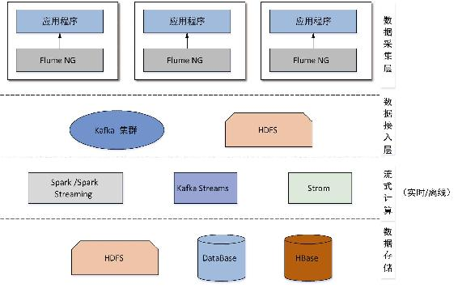
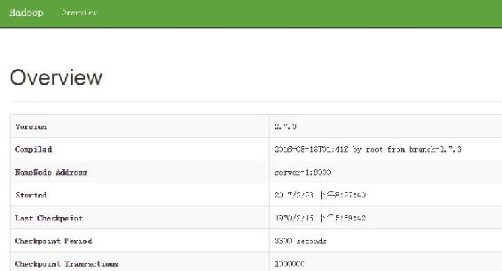

8.3 Kafka与Flume和HDFS整合应用
Flume是一个连接各种组件和系统的桥梁，上一小节提到过在$FLUME_HOME/lib目录下有Flume与HBase、HDFS等集成的jar文件，可以很方便地与HBase和HDFS连接。在实际业务中，我们一般通过Flume从应用程序采集实时数据写入到Kafka，而将历史数据通过Flume导入到HDFS以用于离线计算。当然，我们也可以通过Flume从Kafka将数据写入到HBase和HDFS。例如，我们通过Kafka Streams实时对用户行为分析，将分析结果再写入到Kafka，然后由Flume写入HBase，供可视化应用系统展示。通过将这些系统整合在一起，可以很方便地实现一个扩展性好、高吞吐量的数据采集分析系统。一个可能的数据采集分析系统架构如图8-6所示。
本节只介绍数据采集相关实现，对数据离线计算与实时计算在第10章会有相应实例讲解。在上一小节介绍了Flume采集数据写入Kafka，本节将介绍如何通过Flume将Kafka的数据写入到HDFS的详细步骤，当然我们也可以通过Kafka连接器来实现数据的写入。首先我们简要介绍Hadoop伪分布式的安装配置。

图8-6 数据采集分析系统架构
8.3.1 Hadoop安装配置
Hadoop有单机模式、伪分布式与完全分布式3种运行模式。由于本书重点并不是介绍Hadoop相关知识，因此本书并不介绍Hadoop完全分布式的安装配置。由于单机模式较简单，几乎是解压Hadoop安装文件即可运行，所以单机模式请读者自己查阅相关资料进行安装，这里只介绍Hadoop伪分布式的安装。本书中所用Hadoop环境也是基于这种运行模式，虽然是伪分布式运行模式，但是并不会影响我们对相关应用的讲解。
进入Hadoop官方网站http://mirror.bit.edu.cn/apache/hadoop/common/，下载hadoop-2.7.3.tar.gz，将Hadoop安装包放置服务器待安装目录下。为了讲解方便，我们将该目录记为$HADOOP_HOME，按照以下步骤完成Hadoop伪分布式的安装配置。
（1）解压Hadoop安装包。
tar -xzvf hadoop-2.7.3.tar.gz（2）环境配置。单机模式的Hadoop配置比较简单，只需修改$HADOOP_HOME/etc/hadoop目录以下几个配置文件即可。
- 指定JDK安装路径。在hadoop-env.sh文件中添加JDK安装路径，配置信息如下：
export JAVA_HOME=/usr/local/software/Java/jdk1.8.0_111- 修改core-site.xml。修改Hadoop的核心配置文件（core-site.xml），在该文件中配置HDFS通信地址及文件存储路径。
<configuration>
<property>
<name>fs.defaultFS</name>
<value>hdfs://server-1:9000</value>
</property>
<property>
<name>hadoop.tmp.dir</name>
<value>/opt/data/hadoop/tmp</value>
</property>
</configuration>- 配置项fs.defaultFS用于配置NameNode节点的URI，其值包括协议、主机名或静态IP、端口，这里配置时使用主机名。对于伪分布式模式该节点既是NameNode也是DataNode。配置项hadoop.tmp.dir文件系统依赖的基础配置，若在hdfs-site.xml中不配置NameNode节点和DataNode节点的数据存放位置时，默认就放在该配置所配置的目录下。
- 修改hdfs-site.xml。在该文件中配置Hadoop文件块的数据备份数，由于是伪分布式模式，因此将其值设置为1。同时配置NameNode和DataNode节点文件块数据存储路径。
<configuration>
<property>
<name>dfs.replication</name>
<value>1</value>
</property>
<property>
<name>dfs.name.dir</name>
<value>/opt/data/hadoop/namenode</value>
</property>
<property>
<name>dfs.data.dir</name>
<value>/opt/data/hadoop/datanode</value>
</property>
</configuration>- 修改mapred-site.xml。将配置模板文件mapred-site.xml.template复制一份，命名为mapred-site.xml，在该文件中配置JobTracker的主机名或者IP和端口。对于伪分布式模式该节点既是JobTracker也是TaskTracker。
<configuration>
<property>
<name>mapred.job.tracker</name>
<value>server-1:9001</value>
</property>
</configuration>（3）启动运行。在运行Hadoop之前先进行格式化Hadoop工作空间。进入$HADOOP_HOME/bin目录下，执行以下格式化命令：
./hdfs namenode –format在$HADOOP_HOME/sbin目录下有很多可执行脚本，在这里不再一一介绍，读者可以根据需要启动相应脚本，这里直接运行start-all.sh启动Hadoop。执行启动脚本后，通过jps命令可以查看Hadoop运行的进程，当前进程如下：
31968 Jps
31386 SecondaryNameNode
31678 NodeManager
31068 NameNode
31562 ResourceManager
31205 DataNode在Hadoop启动后，在$HADOOP_HOME/bin目录下执行以下命令来简单验证Hadoop安装是否成功。
在HDFS上创建一个test目录，命令如下：
./hdfs dfs -mkdir /test查看HDFS上的目录，命令如下：
./hdfs dfs -ls /输出以下信息：
Found 1 items
drwxr-xr-x - root supergroup 0 2017-02-23 21:06 /test还可以通过Hadoop提供的Web界面查看Hadoop运行情况。例如，通过http://server-1:50090查看SecondNameNode相应信息，界面部分内容如图8-7所示。

图8-7 Hadoop Web UI界面
还可以通过在浏览器中修改端口查看其他信息。默认情况下，50070端口查看NameNode运行情况，8088端口查看集群所有的应用，50075端口查看DataNode运行情况。其他端口不再一一列举。
8.3.2 Flume采集Kafka消息写入HDFS
首先创建一个kafka-flume-hdfs.properties文件，并完成源、通道和接收器名称的定义，配置信息如下：
agent.sources = kafka # 指定源名称为kafka
agent.sinks = hdfs # 指定接收器的名称为hdfs
agent.channels = kafka-channel # 指定通道名称为chl然后分别配置源、通道和接收器。为了结构清晰，我们分为以下几小节进行介绍。
1．KafkaSource配置
Flume提供了从Kafka采取数据的flume-kafka-source-1.7.0.jar文件，该jar文件定义了一个KafkaSource，因此我们配置一个类型为KafkaSource的源，详细配置如代码清单8-4所示。
代码清单8-4 Flume采集Kafka日志源的配置
# 指定源类型为KafkaSource
kafka-agent.sources.kafka.type = org.apache.flume.source.kafka.KafkaSource
# 指定Kafka对应的ZooKeeper地址
kafka-agent.sources.kafka.zookeeperConnect = server-1:2181,server-2:2181,
server-3:2181
# 指定主题
kafka-agent.sources.kafka.topic = flume-kafka
# 指定消费者消费组Id
kafka-agent.sources.kafka.consumer.group.id = kafka-flume-hdfs
# 一批写入的最大消息数
kafka-agent.sources.kafka.batchSize = 10000
# 批量写入时最长等待时间，单位为毫秒（ms）
kafka-agent.sources.kafka.batchDurationMillis = 1000
# 如果遇到异常则等待最长退避时间
kafka-agent.sources.kafka.maxBackoffSleep = 5000
# 绑定通道
kafka-agent.sources.kafka.channels = kafka-channel2．KafkaChannel通道配置
在前面介绍Flume采集数据时使用的都是内存通道，现在我们使用KafkaChannel。在$FLUME_HOME/lib目录下有一个flume-kafka-channel-1.7.0.jar文件，该文件定义了一个Kafka通道，将采集到的数据写入到Kafka主题中。KafkaChannel的基本配置如代码清单8-5所示。
代码清单8-5 KafkaChannel的基本配置
# 指定通道类型为KafkaChannel
kafka-agent.channels.kafka-channel.type = org.apache.flume.channel.kafka.KafkaChannel
# 指定连接Kafka的地址
kafka-agent.channels.kafka-channel.kafka.bootstrap.servers = server-1:9092,server-2: 9092,server-3:9092
# 指定通道用于缓存数据的主题
kafka-agent.channels.kafka-channel.kafka.topic = kafka-channel3．写HDFS接收器配置
在$FLUME_HOME/lib目录下有一个flume-hdfs-sink-1.7.0.jar文件，定义了一个将数据写入到HDFS的接入器HDFSEventSink，可以通过该接收器提供的配置设置写入HDFS数据格式、文件切割方式、文件压缩方式等。
本例我们配置一个HDFSEventSink，将KafkaChannel中的数据写入到HDFS，以日期和小时来切割文件，即每天的每一小时生成一个子目录，在文件被归档重命名为目标文件之前是一个以“.tmp”为后缀名的临时文件，其中目标文件命名规则为${ filePrefix }.${创建文件时当前时间戳}.${ fileSuffix}。
Flume采集数据输出到HDFS后默认为Sequencefile，该类型文件内容无法直接打开浏览，为了便于直观查看输出的日志信息，我们将fileType设置为DataStream，writeFormat设置为文本（Text）。配置如代码清单8-6所示。
代码清单8-6 Flume采集Kafka数据写入HDFS接收器的配置
agent.sinks.hdfs.type = hdfs
# 配置HDFS路径，按照日期时间切割文件
agent.sinks.hdfs.hdfs.path = hdfs://server-1:9000/kafka-flume-hdfs/%Y-%m-%d/%H
# 指定文件前缀
agent.sinks.hdfs.hdfs.filePrefix = test
# 指定正在接收数据写操作的临时文件后缀名
agent.sinks.hdfs.hdfs.inUseSuffix = .tmp
# 指定文件被归档为目标文件的文件后缀名
agent.sinks.hdfs.hdfs.fileSuffix = .txt
# 指定使用本地时间
agent.sinks.hdfs.hdfs.useLocalTimeStamp = true
# 配置若以时间切割文件时，滚动为目标文件之前最大时间间隔，单位为秒。
# 如果设置成0，则表示不根据时间来滚动文件
agent.sinks.hdfs.hdfs.rollInterval = 0
# 配置若以文件大小切割文件，滚动为目标文件之前最多字节数。
# 如果设置成0，则表示不根据临时文件大小来滚动文件
agent.sinks.hdfs.hdfs.rollSize = 0
# 配置当事件数据达到该数量时候，将临时文件滚动成目标文件。
# 如果设置成0，则表示不根据事件数据来滚动文件
agent.sinks.hdfs.hdfs.rollCount = 0
# 每个批次刷新到 HDFS上的事件数量，默认值
agent.sinks.hdfs.hdfs.batchSize = 1000
# 文件格式，默认为SequenceFile
agent.sinks.hdfs.hdfs.fileType = DataStream
# 写sequence文件的格式，Writable（默认）
agent.sinks.hdfs.hdfs.writeFormat = Text
# 配置当前被打开的临时文件在该参数指定的时间（秒）内，没有任何数据写入时，
# 则将该临时文件关闭并重命名成目标文件
agent.sinks.hdfs.hdfs.idleTimeout = 0
# 接收器启动操作HDFS的线程数,默认值为10
agent.sinks.hdfs.hdfs.threadsPoolSize = 15
# 执行HDFS操作的超时时间，默认为10s
agent.sinks.hdfs.hdfs.callTimeout = 60000
# 绑定通道
agent.sinks.hdfs.channel = kafka-channel4．启动验证
在启动本小节配置的Flume NG代理之前，我们需要将$HADOOP_HOME目录下如表8-3所示的jar文件复制到$FLUME_HOME/lib目录下。
表8-3 Flume采集数据写入HDFS所依赖Hadoop的jar文件
|
路径名 |
文件名 |
|---|---|
|
/share/hadoop/common |
hadoop-common-2.7.3.jar |
|
/share/hadoop/common |
hadoop-nfs-2.7.3.jar |
|
/share/hadoop/hdfs |
hadoop-hdfs-2.7.3.jar |
|
/share/hadoop/tools/lib |
htrace-core-3.1.0-incubating.jar |
|
/share/hadoop/tools/lib |
hadoop-auth-2.7.3.jar |
|
/share/hadoop/tools/lib |
commons-io-2.4.jar |
|
/share/hadoop/tools/lib |
commons-configuration-1.6.jar |
|
/share/hadoop/tools/lib |
zookeeper-3.4.6.jar |
在验证时，可以通过启动一个生产者向主题“flume-kafka”写入消息来模拟日志输出。启动Flume采集数据写入Kafka的Flume代理，然后在控制台向/opt/data/flume/test.log文件通过echo指令写入数据的方式来模拟日志输出，具体执行命令如下。
启动使用Flume从日志文件采集日志写入Kafka的Flume代理：
flume-ng agent --conf /usr/local/software/flume/flume-1.7.0/conf --conf-file conf/ flume-kafka.properties --name agent -Dflume.root.logger=INFO,console启动使用Flume从Kafka采集数据写入HDFS的代理：
flume-ng agent --conf /usr/local/software/flume/flume-1.7.0/conf --conf-file conf/ kafka-flume-hdfs.properties --name kafka-agent -Dflume.root.logger=INFO,console打开一个控制台，执行echo指令，向/opt/data/flume/test.log文件中写入数据：
echo "Flume收集日志写入到Kafka,再从Kafka采集日志写入到HDFS" >/opt/data/flume/test.log查看HDFS中的文件，最终效果如图8-8所示。

图8-8 Kafka与Flume和HDFS整合应用采集日志
至此，Flume、Kafka、HDFS这3个系统之间的整合介绍完毕。尽管在实际应用中业务架构不尽相同，但这3个系统的整合却在本章所介绍的内容范围之内，只不过这3个系统在业务架构中所承担的责任不同而已，即区别在于Flume的源、通道、接收器的不同。
Table of contents
- 版权信息
- 内容提要
- 前言
- 第1章 Kafka简介
- 第2章 Kafka安装配置
- 第3章 Kafka核心组件
- 第4章 Kafka核心流程分析
- 第5章 Kafka基本操作实战
- 第6章 Kafka API编程实战
- 第7章 Kafka Streams
- 第8章 Kafka数据采集应用
- 第9章 Kafka与ELK整合应用
- 第10章 Kafka与Spark整合应用
- 欢迎来到异步社区！